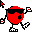
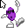

7 Up Cursors

totallyfreecursors.com Cursor
Archived from an old version of totallyfreecursors.com. (repairs made when needed)

DOWNLOAD
 .ani (Windows Animated Cursor) file (326 B)
.ani (Windows Animated Cursor) file (326 B)
CursorMania
A cursor based on Spot from 7 Up.

DOWNLOAD
.ani (Windows Animated Cursor) file (11.1 KB)